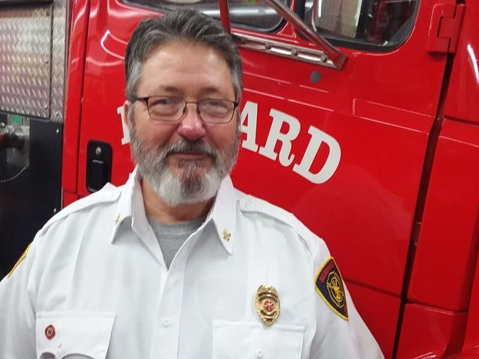

Town of Kennard - Volunteer fire department
Seeking VOLUNTEERS: The Kennard Volunteer Fire Department are currently accepting applicants from Kennard and the surrounding area. For more information please contact the Chief at: FireChief@kennardin.com
Ron Huffman Fire Chief
Ronald (Ron) Huffman started his fire service career in 1985 as a volunteer firefighter with the Shirley Vol. Fire Department, when he moved he joined the Kennard Vol. Fire Department in 1986 and is still a member. From 1978 to 1986 he worked as a mechanic until the garage closed and was then hired at Paul Akers Inc., a propane and anhydrous ammonia engineering company. While there he worked as a service tech building, repairing and servicing propane and ammonia equipment. Then in 1989 he was hired as a career firefighter on the City of New Castle Fire Department. Ron has spent 30 years at New Castle serving in the following capacities: Firefighter, Mechanic, Engineer, Lieutenant, Battalion Chief, Fire Investigator and Hazardous Materials Advisor. Ron has been married to his wife Cindy for over 30 years, has two children and two grandkids. He’s a member of Browns Chapel Wesleyan Church and had served as a board member of the Henry County United Fund, Chairman of the Henry County Local Emergency Planning Committee (since 1999) and the Director of the Henry County Office of Emergency Management (since 2000). Ron is a strong advocate of training and responder safety, as the Counties Emergency Management Director he has been instrumental in the design and creation of the County’s Emergency Services Training Center. Mr. Huffman holds several certifications including Fire Investigator, Fire Inspector, Safety Officer, Hazmat Technician, EMT-B, Rope Rescue Technician, PIO and more.

Space heaters, whether portable or stationary, accounted for two of every five (40%) of home heating fires and four out of five (84%) of home heating fire deaths.
MORE INFORMATIONAbove Average Number of Fires Per Day
November 28 (Thanksgiving) 1,550 (230%)
December 25(Christmas) 740 (58%)
December 24 (Christmas Eve) 720 (54%)
MORE INFORMATIONYounger children were more likely to set fires in homes, while older children and teenagers are more likely to set fires outside.
MORE INFORMATIONThe Information below is provided by ElectroSawHQ.com. They offer lots of reviews and information. Check them out.
Contact Chief Ron Huffman at firechief@kennardin.com
We are also on Facebook, be sure to like us to keep up with all the latest at KVFD!